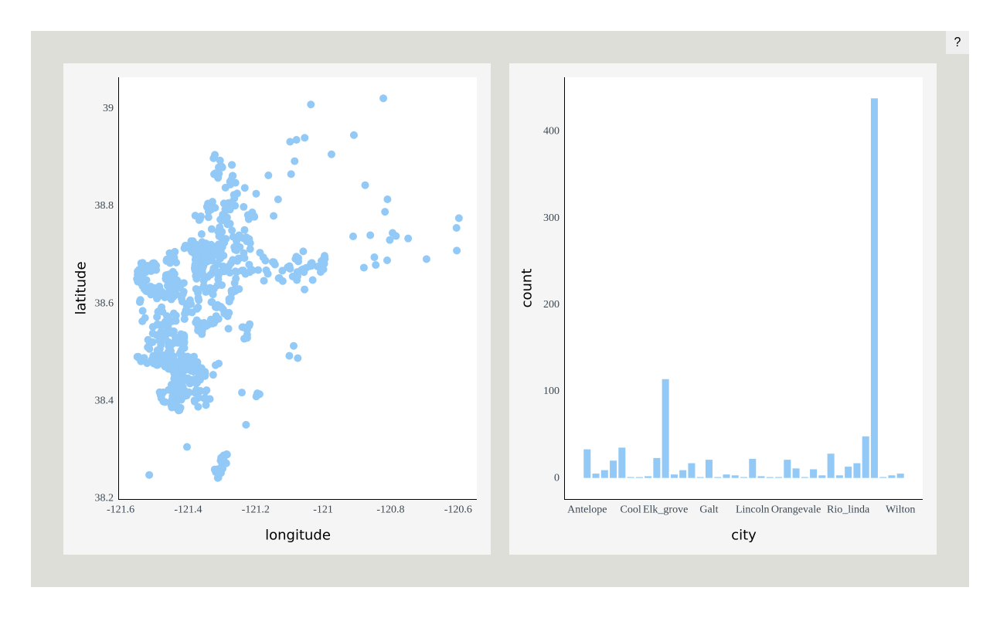
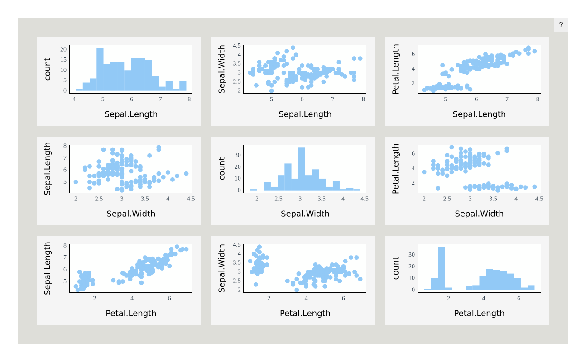
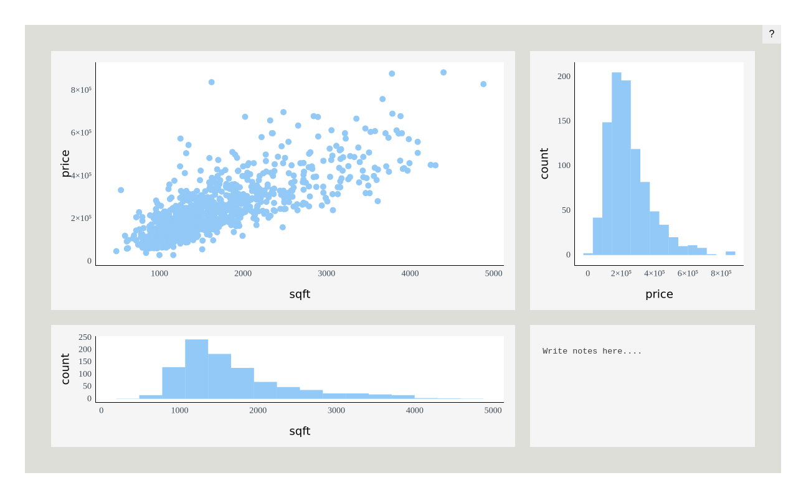
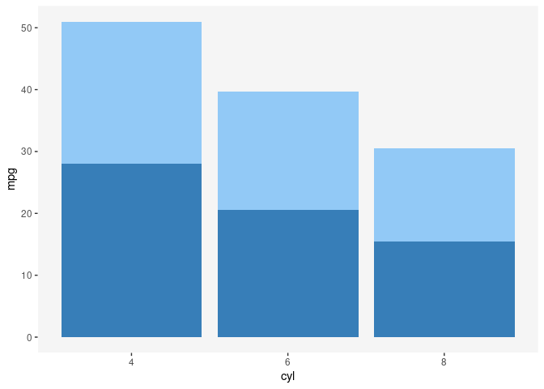
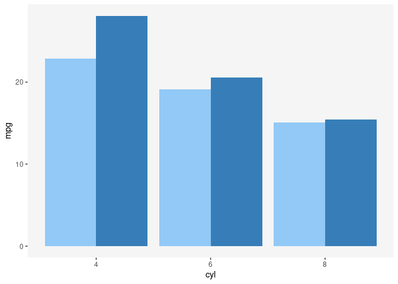
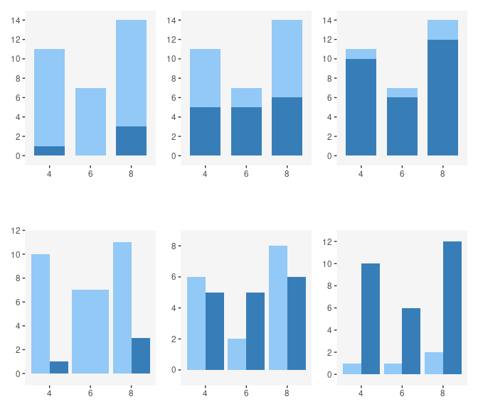
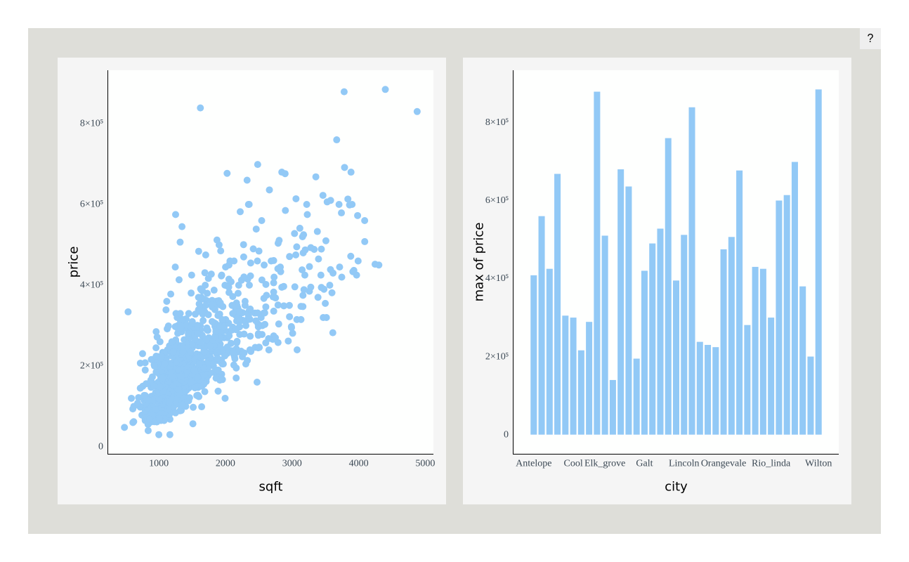
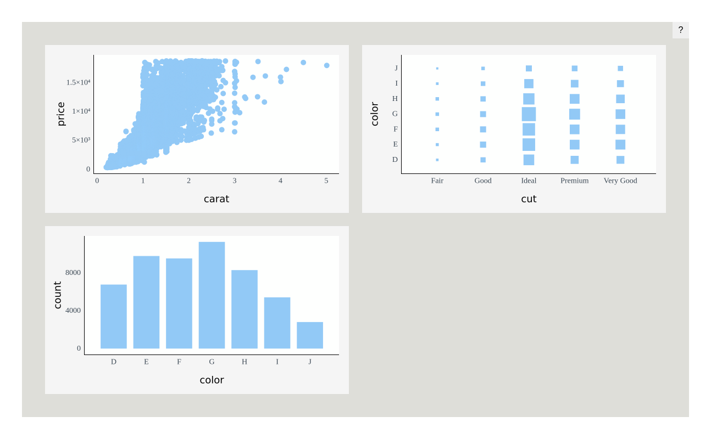
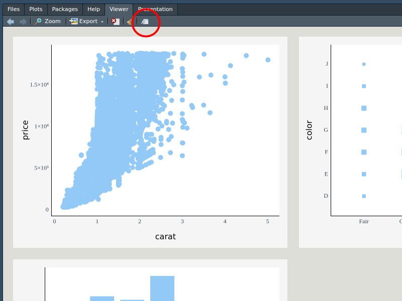

Plotscaper is an R package designed for making interactive figures geared towards data exploration. All plots in plotscaper figures support linked selection, as well as wide variety of other interactions, including parameter manipulation, zooming, panning, reordering, and others.
Quick start
To get started, install plotscaper with:
devtools::install_github("bartonicek/plotscape/packages/plotscaper")Next, open up RStudio and run the following code:
library(plotscaper)
layout <- matrix(c(
1, 1, 2, 3,
1, 1, 4, 5,
6, 7, 7, 7
), ncol = 4, byrow = TRUE)
set_scene(sacramento) |>
add_scatterplot(c("longitude", "latitude")) |>
add_barplot("city") |>
add_histogram(c("sqft")) |>
add_fluctplot(c("beds", "baths")) |>
add_histogram2d(c("sqft", "price")) |>
add_notes() |>
add_parcoords(names(sacramento)) |>
set_layout(layout)
In your viewer, you should now see something like the image above, however, your version should be fully interactive (Github doesn’t allow JavaScript in README.md, hence why the image above is static).
Try moving your mouse somewhere over the scatterplot in the top left of the figure and clicking and dragging to select some points. You should see the corresponding cases get highlighted across all the other plots!
There are many other ways interacting with plotscaper figures, including:
- Zooming and panning
- Changing the size of objects
- Increasing/decreasing the opacity (alpha)
- Assigning selected cases to persistent groups
- Manipulating parameters such as histogram binwidth and anchor
- Modifying continuous axis limits
- Sorting and reordering discrete axes
- Resizing individual plots
Click on the question mark in the top right corner of the figure to see the list of the available options plus the corresponding key/mouse bindings.
Anatomy of a plotscaper figure
There are a bunch of things going on in the code that was used to create the figure above. Let’s walk through them step by step.
First, whenever we want to create a plotscaper figure, we need to set up a scene, which is a kind of global context into which all of the plots get placed. To set up a scene, run:
set_scene(data = sacramento)where data is some data.frame object. Here we’re using the Sacramento housing data set from the caret package.
If we run the code above, we will just get an empty rectangle. The reason for that is that, in order to do some things, we first need to fill the scene with plots. To populate the scene with plots, we can use the add_* functions:
set_scene(sacramento) |>
add_scatterplot(c("longitude", "latitude")) |>
add_barplot("city")
The code above creates interactive figure with a linked scatterplot and a barplot. We only need to specify which variables we want to show in each plot by simple character vectors of their names. Simple as.
Under the hood, a plotscaper figure is just a htmlwidgets widget. This means that, to render the figure, we need to print the underlying object. More specifically, when we print a plotscaper scene, htmlwidgets generates the underlying HTML, JavaScript, and CSS, and sends it to the RStudio viewer (which is a kind of Web browser). This operation is lazy - if we don’t print the object, nothing happens:
s <- set_scene(sacramento) |>
add_scatterplot(c("longitude", "latitude")) |>
add_barplot("city")However, printing s generates the figure:
s # This is the same as print(s)
We can use this laziness to generate figures programmatically with R. For example, here’s how we could create an interactive scatterplot matrix (SPLOM) of the Iris dataset:
iris_smaller <- iris[, 1:3]
keys <- names(iris_smaller)
s <- set_scene(iris_smaller)
# Loop through columns
for (i in 1:3) {
for (j in 1:3) {
# Add a scatterplot if row & column no.'s are different
if (i != j) s <- s |> add_scatterplot(c(keys[i], keys[j]))
# Add a histogram if row & column no.'s are the same
else s <- s |> add_histogram(c(keys[i]))
}
}
s
Layout
We can control the figure layout by using the set_layout function. This function works similarly to the layout function from the graphics package. We just give the function a matrix of numeric values representing the plot ids, and the figure automatically resizes the plots based on how many equal-sized rectangles in a grid each plot takes up.
For example, here’s how we can create a figure with large scatterplot on the top-left, a tall histogram on the right-hand side, a short wide histogram on the bottom, and a small section for notes (not-(e)-plot, pardon the pun) on the bottom-right:
layout <- matrix(c(
1, 1, 2,
1, 1, 2,
3, 3, 4
), ncol = 3, byrow = TRUE)
set_scene(sacramento) |>
add_scatterplot(c("sqft", "price")) |>
add_histogram("price") |>
add_histogram("sqft") |>
add_notes() |>
set_layout(layout)
You can still resize individual plots by pressing and holding the S key and then dragging a widget in the bottom right of the plot area. Note, however, that this feature is a bit finicky and may result in gaps.
The algebra of highlighting
This section delves into the deeper properties of
plotscaper. If you are happy using the default figures to explore your data, feel free to skip it, however, you may still find it an interesting read.
When I started my PhD project, I wanted to create a framework for making interactive graphics that would support certain types of interaction out of the box. Specifically, I wanted every plot to support linked selection, i.e. being able to click or click and drag some objects in one plot and have all the corresponding cases get highlighted across all other plots. The reason why I wanted to support linked selection is because it allows you to quickly query different subsets of the data - you select a few objects in one plot and immediately see the summaries on that subset of the data - this makes it a really useful interactive feature and a lot of data visualization researchers swear by it (see e.g. Buja, Cook, and Swayne 1996; Heer and Shneiderman 2012; Ward, Grinstein, and Keim 2015; Ware 2019). Anyway, alongside linked selection, I also wanted to be able to support various kinds of plots and statistical summaries, such that, if we were draw to draw a barplot, we could make the bars display a different summary statistic (instead of the usual counts), such as e.g. sums or means of some other variable.
This all sounds simple enough, right? However, I kept running into this one issue, over and over again. I wanted all plots to support linked selection and to be able to show different kinds of summaries. In doing so, I wanted to treat the interaction (linked selection) and statistics in the plots as two independent components. Unfortunately, this is not how things work, and I kept hitting my head against the wall. However, by doing so, I also eventually stumbled upon something that I think is really interesting. I am now convinced that graphics, statistics, and interaction are inextricably linked, in a deep, algebraic way, and, if we want to create interactive data visualizations that look and behave in sensible ways, we need to be aware of that. I hope I can convince you too - let me start by laying out the problem I kept running into, starting with some simple static plots.
The problem
Try and see what’s wrong with the following plot:
theme_set(theme_bw() +
theme(panel.grid = element_blank(),
panel.border = element_blank(),
panel.background = element_rect(fill = "whitesmoke")))
ggplot(mtcars, aes(x = cyl, y = mpg, fill = am)) +
geom_bar(stat = "summary", fun = mean) +
scale_fill_manual(values = c("#92c9f6", "#377eb8")) +
guides(fill = "none")
The plot above looks like something that might result from linked selection, and, visually, it looks like a perfectly fine ggplot2 figure. However, take a close look at the following line:
geom_bar(stat = "summary", fun = mean)We’re telling ggplot2 that we want to draw bars by summarizing the y-axis variable by its average, within the levels defined by the Cartesian product of the x and fill variables (i.e. a table with x as rows and fill as columns). However, there’s one important argument that is applied to the function call, which is a ggplot2 default that we don’t see unless we specify it explicitly:
geom_bar(stat = "summary", fun = mean, position = "stack")When using using the fill aesthetic with geom_bar (as well as other geoms), ggplot2 applies the stack transformation by default. In the case of bars, this transformation stacks the bars vertically on top of each other, effectively summing up the heights of the coloured sub-bars.
But herein lies the problem: what does the height of the stacked bars represent now? Since stacking bars is effectively summing the underlying statistic, each whole bar now represents the sum of the group averages. That is not a meaningful summary statistic - “sum of averages” is not a quantity that many people would care about or know how to interpret. This is the kind of problem that can easily trip up a data visualization rookie, and a good number of data visualization researchers have warned about this:
“Stacking is useful when the sum of the amounts represented by the individual stacked bars is in itself a meaningful amount” (Wilke 2019, 52).
“[…] It is very important that if the element’s size is used to display a statistic, then that statistic must be summable. Stacking bars that represent counts, sums, or percentages are fine, but a stacked bar chart where bars show average values is generally meaningless.” (Wills 2011, 112).
Alright, you might say, I cannot sum averages, but since summing sums is fine, what about taking an average of the averages? Unfortunately, this is not correct either - the mean of group means is not the same as the grand mean:
mean(1:3)
#> [1] 2Some researchers have warned about this too:
“[…] We do this to ensure that aggregate statistics are always computed over the input data, and so users do not inadvertantly compute e.g., averages of averages, which can easily lead to misinterpretation.” (Wu 2022)
So what should we do? If you’re familiar with ggplot2, you may be thinking of one handy solution right now: instead of stacking the bars, let’s use dodging and plot them side by side:
ggplot(mtcars, aes(x = cyl, y = mpg, fill = am)) +
geom_bar(stat = "summary", fun = mean, position = "dodge") +
scale_fill_manual(values = c("#92c9f6", "#377eb8")) +
guides(fill = "none")
This works well for static graphics.
However, in interactive graphics, dodging has several issues. Take a look at the following two rows of plots:

In both rows, we represent the same data; in the top row we use stacking, in the bottom row we use dodging. We can imagine these barplots being produced by linked selection, with the dark-blue bars representing selected cases and more cases being selected as we move from left to right. Notice that in the top row, the overall contour of the plot remains constant even as the number of selected cases changes: we always have a tall left bar, tall right bar, and a short middle bar, and only the heights of the highlighted dark-blue sections fluctuate.
The same is not true for dodging. With dodging, since we plot the selected and non-selected cases side-by-side, selection can affect the overall shape of the plot dramatically - bars may shrink or grow, or even pop and in out of existence (see left-most plot in the bottom row).
This may impact other parts of the plot too - see how the top y-axis limits changes across the plots. Thus, if we want to implement selection on a linked barplot with dodging, we have a tough choice over whether we make the axes react in response to selection or not. If we make the axes reactive then the user will be always able to see all of the data, however, when selection happens, the axis limits reset and we lose the context that they provide. If we don’t make the axes reactive, we risk the bars growing outside of the plotting area. We don’t have to worry about this in the case of the stacked barplot since selection does not affect the height of the tallest bar.
Also, this is a bit of a subjective preference, but I find interactive figures which change gradually more visually pleasing and easier to read than figures in which objects fluctuate rapidly. I haven’t found much research to support this claim more broadly. There is the article by Hullman et al. (2013), who found that, when presenting sequences of static graphics, people prefer the sequences where the plots change gradually rather than abruptly.
Sums preserve set union
So should we only ever do linked selection with sums and counts, so that we can use stacking to highlight the selected cases? That seems a bit limiting. But perhaps there’s another way.
In the quotes above, Wilke (2019) and Wills (2011) said that the quantity represented by the stacked bar should be “meaningful”. What does that mean?
Well, if I was to try to rephrase what Wilke and Wills were getting at, I would say that sums are a particularly nice kind of summary statistic because:
Sum of grouped sums is equal to the sum of everything.
In other words, we can take some sets of data, sum them up each individually, and then sum up the sums, and we’ll get the same result as if we had first combined those sets into one big set and summed that up. In other words, sums preserve set union. This makes it possible to draw highlighted parts of bars or other objects, because we know that if we combine (sum) two sums, we’ll get a valid summary of the union of the underlying cases of data.
Are there other statistics that behave this way? What if we replace the word “sum” by a placeholder, for example “foo”:
Foo of grouped foos is equal to the foo of everything.
Then, it actually turns out there are other statistics that behave this way. For example, the product of products is also a valid product of all cases:
prod(2:4)
#> [1] 24And likewise, the maximum of maximum is also the valid maximum for all cases:
So how do we make this idea precise? Turns out there is a mathematical concept that encapsulates this.
Monoids
“Monoid” sounds scary but it’s really nothing complicated. It’s just three things:
- Some set
- A binary operation
- A neutral element
Subject to two rules:
- Unitality:
- Associativity:
This means that, when we have a monoid, we have a bunch of things and a way of combining these things , such that, when we combine these things, the order in which we do it doesn’t matter. We also have some neutral element , that, combined with anything else, just yields the same thing back.
Typical examples of monoids include the above mentioned sums, products, and maximums (here, the set is real numbers and the neutral units are 0, 1, and respectively). Counterexamples include the above-mentioned means, as well as, for example, exponentiation (which isn’t associative: .
Monoids are a fundamental concept in abstract algebra and category theory (see e.g. Fong and Spivak 2019; Lawvere and Schanuel 2009), and are also heavily used in functional programming (see e.g. Milewski 2018). For our purposes, they important because they have the exact property we were looking for - they preserve set union. Suppose we have two disjoint subsets of some data , and we can summarize each with some monoidal summary F:
That is, we just take all elements in and “sum” them up together into one value (where “sum” could be something else).
Now, if we summarize and and combine the summaries, we get the same result as summarizing the union:
This means that, when we have monoids, we can compare nested subsets of the data. Which is precisely what we want to do if we highlight some cases in a plot: we want to compare the summary on the selected cases () vs. that on everything ().
There are a few important caveats regarding comparison of multiple selected groups and monotonicity. TODO
Barplot of maximums
In plotscaper, if you know a little bit of JavaScript, you can use the available plots to display monoidal summary statistics, using something called reducers. To create a reducer, we need two things:
- An initial function: a function that produces the neutral element
- A reduce function: a function that takes two values (in ) and combines them together, such that the operation is associative and unital
These currently need to be JavaScript functions.
For example, suppose we want to display the barplot of maximums for some positive numeric variable. Then we can use the following JavaScript arrow function as the initial function:
The function takes in no arguments and just produces the value zero. In computer science lingo, this kind of “dumb” function is called a thunk. In this case, the function could technically just be a value, however, thunks are more general, with the way how pointers work in JavaScript.
The one other thing we need is a reduce function:
This is just a very simple function that takes two numbers and returns the bigger one, using the built in Math.max JavaScript function. That’s it.
You might be asking how do you know whether the operation that the function does is associative and unital. You have to figure that out yourself: try it out on a couple of candidate values & see if the properties hold. plotscaper doesn’t know either - if you give it a function that doesn’t have those properties it will still try to make an interactive plot. It can’t know because it doesn’t know which values to try; the properties could hold for a handful of numbers but not for others. The functions behind it can actually support values other than numbers, I haven’t tried to implement a plot like that yet but we’ll see in the future.
Anyway, here’s how you can create a barplot of maximums in plotscaper:
library(htmlwidgets)
# Make the reducer - it really is just an R list() underneath
max_reducer <- reducer(
name = "max",
initialfn = "() => 0",
reducefn = "(x, y) => Math.max(x, y)"
)
set_scene(sacramento) |>
add_scatterplot(c("sqft", "price")) |>
add_barplot(c("city", "price"),
options = list(reducer = max_reducer)) # Specify the reducer in plot options
Since maximum is a monoid, highlighting will work as expected! However, only for one selected group: when multiple groups are selected, we may not be able to see all of the bars; the reason for that is more math. TODO
Performance
While performance wasn’t a number one concern for plotscaper, it can perform fairly well on moderately-sized data sets (thanks largely to the work of the smart people who have optimized JavaScript engines like V8).
For example, if you want to put plotscaper to a stress test, try creating a figure with the entire diamonds dataset from the ggplot2 package:
set_scene(ggplot2::diamonds) |>
add_scatterplot(c("carat", "price")) |>
add_fluctplot(c("cut", "color")) |>
add_barplot(c("color"))
With 50,000 cases, dragging to select points in the scatterplot becomes a bit sluggish on my machine, but still fast enough to make the figure feel “interactive” rather than a “slideshow”. Your mileage may vary. Note that most of the slowdown is due to rendering rather than computation - removing the scatterplot with its 50,000 points makes the interactions a lot snappier.
Frustratingly, there seems to be a small slowdown when interacting with the figure in the RStudio Viewer rather than directly in the browser. Interestingly, this does not seem to be related to the dataset size. I’m not very familiar with the RStudio internals and have no idea why this might be, but for now, if you want faster interactions I recommend just opening up a browser window, e.g. by clicking the icon in the top right of the viewer:

(if you know the reason behind this slowdown and/or how to fix it, please email me at abar435@aucklanduni.ac.nz)
Anyway, if you need fast figures with larger data sets, I recommend taking some of the following steps:
- Run the figure in the browser rather than viewer
- Use plots which summarize the data (e.g. barplots, 2D histograms), rather than plots which show all of the data points
- Take a subsample the data